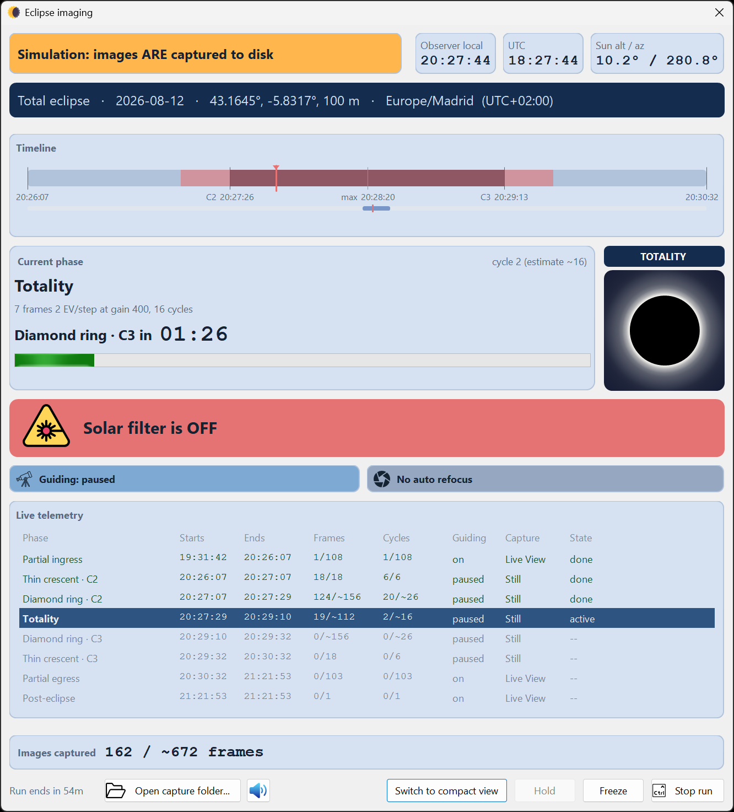
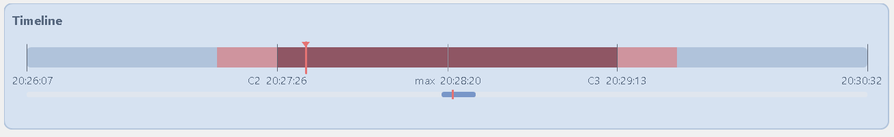
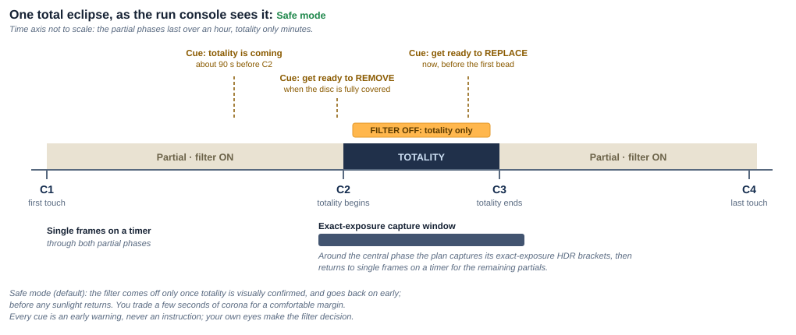
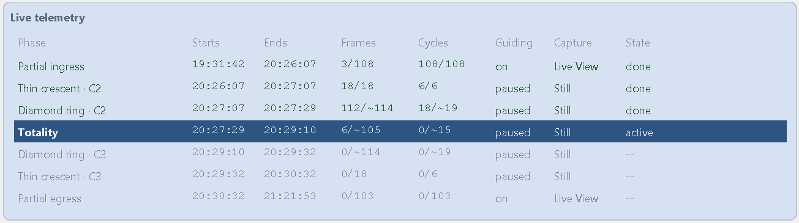
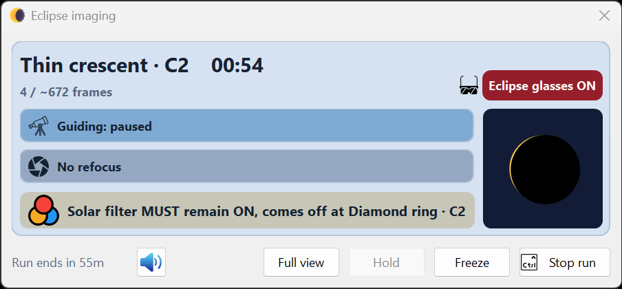

Once you arm, the Eclipse imaging console opens. This is the live instrument panel you watch
through the run. It stays on top and remains independent of the main HelioMaker window, so minimizing HelioMaker
does not hide the console behind SharpCap or PHD2.
The exposure plan is already fixed
The current version does not allow exposure or gain changes after automated imaging starts. The console reports
and executes the selected phase recipes; it is not a live exposure editor. Determine the filtered full solar
disk exposure, camera gain and effective ND rating of the complete filter stack with the physical rig, then
derive, tune and rehearse the plan before opening preflight. Do not tune sequence controlled parameters
manually in SharpCap after that point;
HelioMaker applies the saved plan again when the run is armed.

The full console during the C3 diamond ring phase of a capture rehearsal. The red banner gives the
Classical mode instruction to prepare to replace the solar filter at the first returning bead. The run type
banner states clearly that images are being written to disk.
First confirm the run identity
Run type banner
The largest item in the top row distinguishes
LIVE ECLIPSE: this is the real thing,
Simulation: images ARE captured to disk, and
Simulation: timing only, no images captured. Read it before relying on the run.
Observer local, UTC and Sun alt / az
Both clocks are always visible. The Sun altitude and azimuth are calculated for the run clock and selected
observer site. The Time display choice made before the run controls the contact, phase and timeline labels; it
does not remove either clock from the console.
Event identity band
The dark strip identifies the eclipse type, date, coordinates, elevation and IANA time zone with its UTC
offset. Use it to catch a wrong event or site before the critical phases.
Timeline, phase and live geometry
Timeline
The main rail shows the current time, contacts, totality and the interval in which the filter is planned to
be off. Near the central phases it automatically enlarges the thin crescent or diamond ring through C3 window
so C2, maximum eclipse and C3 remain readable. A smaller overview rail continues to show the full C1 to C4
event and the position of the enlarged window.
Current phase card
Shows the active phase, its exposure or HDR recipe, camera gain, planned cycle count, completed cycle count,
progress bar and a large countdown to the next phase. Between phases it states what HelioMaker is waiting for
and counts down to that phase.
Live geometry
A calculated full solar disk view follows the run clock, including a compressed rehearsal clock. It is a
stable visual model of eclipse progress, not a live camera image and not proof that the physical Sun is
centred.

Near the central phases, the main timeline enlarges the critical interval so the contacts remain
readable. The red shaded span is the planned filter off interval, the red marker shows the current time, and
the small rail below preserves the position within the full eclipse.

How a total eclipse plays out in
Safe mode. Diamond ring (Classical) mode differs; compare both on
Safety and eclipse modes. Visual confirmation controls removal, while Safe mode
replaces the filter early on its cue.
Live telemetry and capture progress
The telemetry table keeps every planned phase visible and highlights the active row. Its columns are intended
to answer both what the plan requested and what the rig is doing:
Column
Meaning
Starts / Ends
The phase boundaries in the time display selected before the run.
Frames / Cycles
Completed versus planned counts. A tilde marks a prediction for
a deadline governed phase, so 12/~8 means twelve were captured against an estimate of eight.
Guiding
The plan's state for that phase: on, off or paused. The active cell turns
red if PHD2 disagrees with the plan; stalled means PHD2 has stopped reporting reliably.
Capture
The phase's planned SharpCap mode: Live View or Still.
The active cell turns red when the camera reports the other mode.
State
active, done, MISSED,
FAILED, or -- for a phase still to come.

The active phase is highlighted. Tildes mark deadline governed estimates; the Guiding and Capture
columns show the planned state for every phase, while State distinguishes completed, active and pending
work.
Images captured shows the total confirmed frames against the plan estimate. A separate
missed count appears when frames are lost during Hold.
The footer carries buttons only. It used to lead with status text — time remaining, and
the progress of post-capture image-set saving — and on a narrow console those growing labels could push
Stop run off the end of the row. Nothing that matters was lost: the countdown to the next
phase is on the phase card where you are already looking, and image-set saving is reported in the run log and in
eclipse_run.log.
In full view, Open capture folder... opens the current run folder. Captured files and
eclipse_run.log are stored there, providing the durable record behind the live panel.
Shutter sound feedback
Shutter feedback is enabled by default and follows SharpCap capture telemetry, not merely an
HM dispatch request. Short clicks and bursts follow confirmed forward progress. The long-exposure open/close pair
is different: it marks SharpCap starting and ending an exposure attempt, and does not prove that
the image was accepted or saved. Use the live frame counts, final summary and capture folder as the record of
successful images. The sound is adapted to the phase:
Pre-eclipse, partial and post-eclipse single shots use one short shutter click.
Each completed HDR bracket in a thin crescent or the central phase uses a short group of
clicks matching the bracket size, up to nine. The central phase used to be silent; it is not any more, for
every eclipse type.
The rapid short exposures in the C2 and C3 diamond ring phases use an occasional restrained burst rather
than one click for every high-speed frame.
Exposures of one second or longer use distinct shutter-open and shutter-close sounds, in the diamond ring
phases and in totality. These are camera-activity cues, not saved-file confirmations.
One cue style per cycle
Where a cycle's long exposures narrate themselves with the open and close sounds, that cycle does not also get
the completed-bracket click group: the two would fight over the same moment. It is one cue style per
cycle rather than one individual sound, so a cycle containing several long exposures still produces an
open/close pair for each of them. This only arises on a total eclipse. The long-exposure
sounds are tied to the totality and diamond ring phases, so an annular or partial central phase always keeps
its click group however long its exposures are.
The diamond ring phases never take the completed-bracket click group. That is deliberate: they last seconds
and fall exactly where your hands are on the filter, which is not a moment to add a burst of clicks to. They are
not silent, though — their short exposures still produce the restrained burst above, and their long ones
still produce the open and close sounds.
Simulated runs make these sounds too. A rehearsal on the built-in eclipse simulator used to be completely
silent, which made it a poor rehearsal of what eclipse day sounds like; the clicks now follow the simulator's
own file writing, at the plan's real cadence.
The small shutter button beside Open capture folder... is available in both full and
compact views. Its tooltip states the current setting: Silent shutter OFF means capture
sounds are audible; Silent shutter ON mutes them. This control affects shutter feedback
only, not the spoken safety and filter cues, which use their own audio track.
The filter cues: visual confirmation for removal
The most important thing the console does is tell you when to move the filter. The cues are both
visual (a large banner) and audio (spoken prompts, if enabled). Filter removal
requires the visual confirmation defined by the selected mode. Safe mode replacement is deliberately scheduled
early, while the disc is still covered. The countdown is advisory and is displayed separately in large type.
Normal state: Solar filter MUST be ON, or, when the guide scope is also filtered,
BOTH filters MUST be ON (main + guide scope). HM cannot sense the physical filters; this wording states
the required safe condition rather than claiming that the operator has already fitted them.
Approaching totality: Get ready to REMOVE the filter, ONLY WHEN YOU SEE THE DIAMOND RING
(Classical) or … ONLY WHEN THE SUN'S DISC IS FULLY COVERED (Safe).
During totality: Solar filter is OFF (or BOTH filters are OFF (main + guide scope)).
Coming out: Classical Get ready to REPLACE the filter, AT THE FIRST BEAD OF SUNLIGHT;
Safe REPLACE the filter NOW, BEFORE THE FIRST BEAD OF SUNLIGHT.
Eyes, not the clock
These cues drive the scope's solar filter. Remove it only when you actually see the
signal, which is the diamond ring (Classical) or the disc fully covered (Safe), and never just because the countdown
reached zero. In Safe mode you're prompted to replace it
early, while the disc is still covered. Follow that cue. If the plan guides through the filter off
interval with a separate guide scope, the cue names both scope filters; move them together.
Your own eye protection is separate: it comes off only during totality itself, in either mode.
Annular and partial eclipses have no filter cues at all
Everything above belongs to a total eclipse. On an annular or partial run the filter never comes off, so the
banner stays at Solar filter MUST be ON and Eclipse glasses ON for the entire event, there is no
filter-off band on the timeline, and no removal countdown ever appears. The single spoken prompt you hear
about ninety seconds before annularity or maximum announces the central phase and repeats that the filter
stays on. If you have photographed a total eclipse before, this is the habit to unlearn: no cue is
coming, and its absence is the correct behaviour.
Guiding, refocus and recovery
Status
Console meaning
Guiding
Green means locked with stable Sun detection and normal drift; blue
means an intentional planned pause; amber identifies questionable calibration; red identifies lost or
unstable Sun detection, drift above 20 guide-camera pixels, stopped guiding when required, a lost PHD2 link,
or a mount that is slewing, parked or not tracking. A mount that is not tracking outranks whatever the plan
asked for, so the badge states the mount fact plainly, for example
Mount parked, waiting for unpark: guiding cannot run at all until the mount tracks
again. A neutral badge means guiding is not required now.
When recovery needs a new PHD2 session, the badge offers Reconnect PHD2 in both full
and compact views. If the PHD2 camera or mount is disconnected, HelioMaker reconnects the equipment before
sending any looping, target-selection or guiding command. Eclipse imaging continues while this guiding path
is being repaired.
Automatic refocus
Blue means armed, waiting, or pausing guiding; the
near-white badge marks an active focus scan; green means complete; red means failed, unable to run because
focus was not confirmed, or that the refocus time window was missed. A neutral badge means refocus is off or
is not scheduled for this run. See Focusing.
SharpCap camera and connection
If camera frames stop, the device disconnects,
the wrong camera opens, or the SharpCap capture link is lost, capture is held and its recovery state takes
priority over ordinary refocus status. The console reports the outage, waiting, relaunching, reconnecting and
settings-restoration stages. HelioMaker resumes only after the planned camera is open and its capture folder,
mode and image settings have been restored. A brief USB outage may recover inside SharpCap's own grace
period; a longer outage can repeat the critical alarm while operator attention is still required.
Critical alarm
When Play audio cues during eclipse is enabled, an alarm may sound if HelioMaker
detects an unexpected critical PHD2 or SharpCap error. The alarm asks for your attention; read the guiding,
SharpCap/refocus badge and incident text immediately. Depending on the failure, HM may relaunch PHD2 or
SharpCap, reconnect and attempt to resume eclipse imaging automatically. Do not assume the sound means either
failure or recovery is complete—the console reports the current state. The alarm follows the plan's Audio cues
checkbox and remains audible when Silent shutter ON has muted camera feedback. It uses
a separate audio path from the spoken safety and filter cues, so it cannot interrupt or mute a scheduled spoken
instruction; only cosmetic shutter feedback may yield briefly. Stopping the sequence or closing its console
stops any spoken eclipse cue that is already playing.
Red operator alerts force the full view
A critical alert expands a compact console so it cannot remain hidden. Examples include a capture drive that
may fill, camera frames that stop arriving, a camera in the wrong capture mode, loss of the run or timing record,
or a SharpCap recovery that needs manual action. Read the instruction in the banner before touching the rig.
Compact console view
Select Switch to compact view to reduce the always on top console to a narrow corner
strip. Select Full view to restore the complete panel.
The compact strip retains the calculated geometry, phase and countdown, captured and missed frame counts,
guiding and refocus badges, and the complete filter cue with its countdown. Filter instructions
are never abbreviated. The footer remains available for Full view, Freeze during rehearsals, and Stop run.
The capture-folder and Silent shutter controls remain available; the detailed timeline and telemetry are hidden
until Full view is restored.
Beside the calculated geometry, both console sizes show Eclipse glasses ON outside
totality. During the fully covered interval it changes to a distinct TOTALITY indicator.
Treat it as a prominent reminder, not a substitute for observing the real Sun and following certified eye-safety
practice.
Guiding and refocus each occupy a full-width bar carrying its own icon, in both the compact strip and the full
console, so the two rig questions read the same way at either size. Both bars are always present: when refocus is
not scheduled the bar says so rather than disappearing.

Compact view keeps the phase countdown, capture total, guiding and refocus state, complete filter
cue, capture-folder access, Silent shutter toggle and essential controls. Select
Full view to restore the timeline and telemetry.
Hold, Freeze and Stop
Hold
Manual Hold is intentionally disabled in this beta release. Do not plan on pausing a live eclipse run:
use Stop run only when capturing must end completely. HelioMaker may still place the
session on hold automatically if the mount starts slewing or stops tracking; the red console banner states
what happened and the session resumes automatically when the mount is tracking again.
Freeze / Unfreeze
A rehearsal only control that stops the rehearsal clock and schedule so you can inspect the panel.
Unfreeze continues from the same simulated eclipse instant. Freeze is hidden during the live eclipse and is
unavailable while the run is held.
Stop run
Hold Ctrl and click to end capturing. This cannot be undone. Closing an active console with
its window close button instead opens a guarded confirmation requiring Yes, stop imaging the
eclipse; Enter or Escape cannot confirm the stop.
When the run ends
The console returns to full view automatically. The current phase card becomes
Run summary, reports Event ended, and shows the total frames
captured, planned and missed. The phase telemetry remains as the final per phase record.
If frame timing data is available, a Timing summary button opens the detailed report in
a browser. The summary card itself deliberately carries only the one result you came back for — frames
captured against frames planned. The timing verdict is written to the run log and to
eclipse_run.log, and the report behind that button holds the detail; a second, smaller line under
the headline only competed with it. Hold, Freeze and compact controls disappear, and
Stop run becomes Done with no Ctrl key required.
Rehearse the console until it's boring
Everything on this page should be familiar before eclipse day: the layout, where the countdown is, what each cue
says and sounds like, what compact view retains, and how automatic mount warnings appear. That familiarity is the payoff of the
advance preparation: on the day, you glance at the panel, listen for
the cue, use the visual rule for your selected mode when removing the filter, follow the Safe mode early replacement
cue if applicable, and spend the rest of totality looking up.